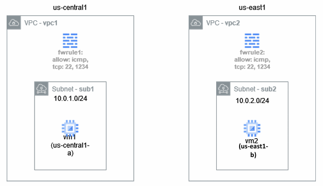

Which of the following is a private IP address, as defined in RFC 1918
In the following picture, VM1 and VM2 are provisioned with an Internal IP address only. Assuming the firewall allows ICMP messages, can VM1 ping VM2?

Which of the following is true about VPC peering?
If a VM is provisioned without an External IP address, it cannot access the public Internet unless:
In Microsoft’s Software-driven WAN, in the context of handling traffic on its backbone network, the authors propose that legacy routing is inefficient because of:
In Google’s Espresso, which routing protocol was central to the work?